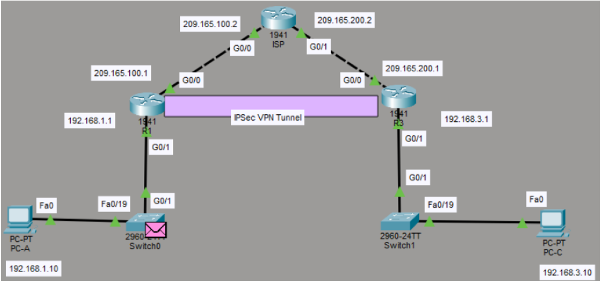
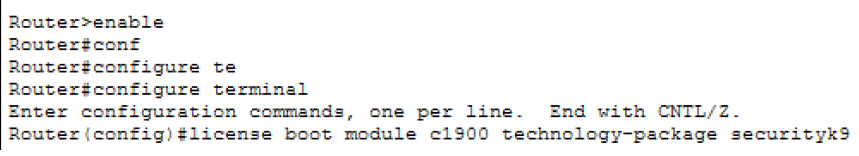
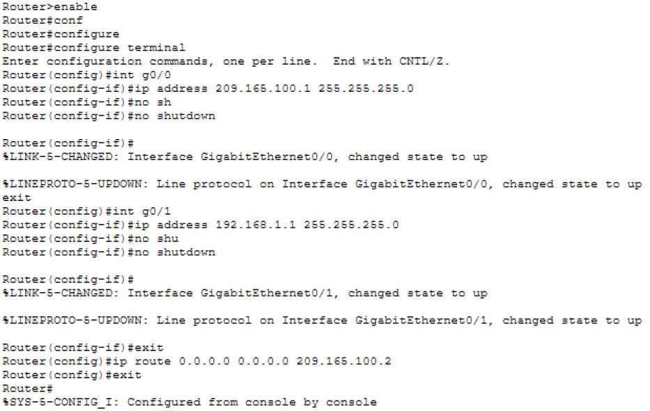
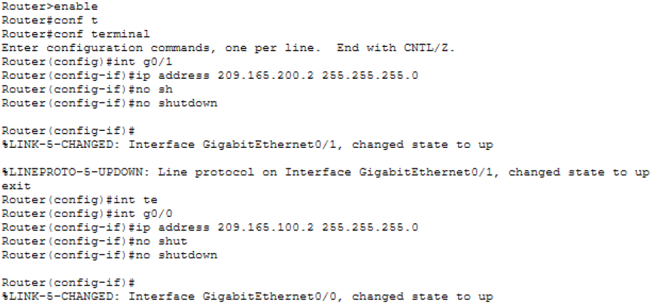
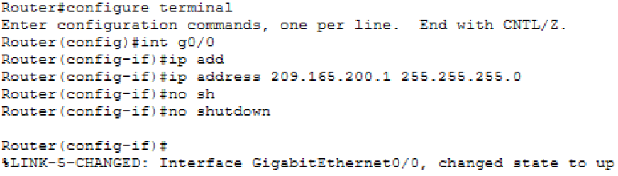
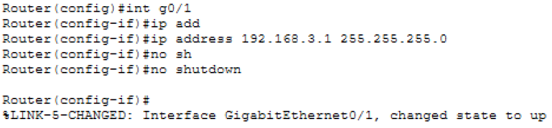
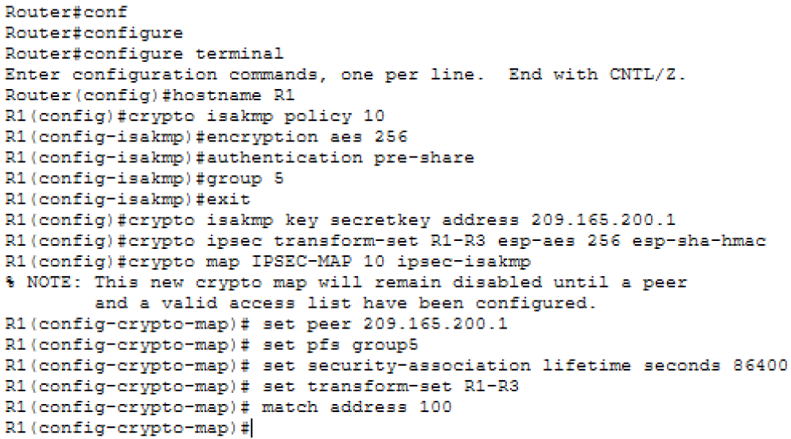
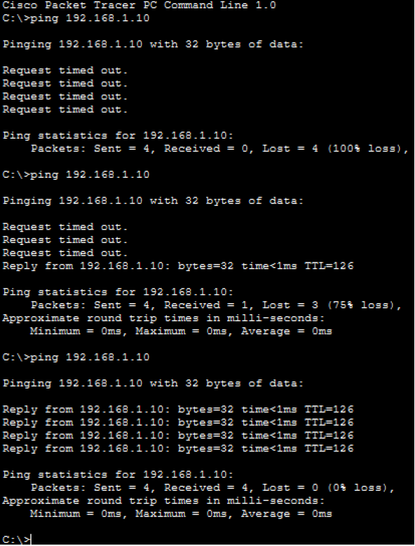
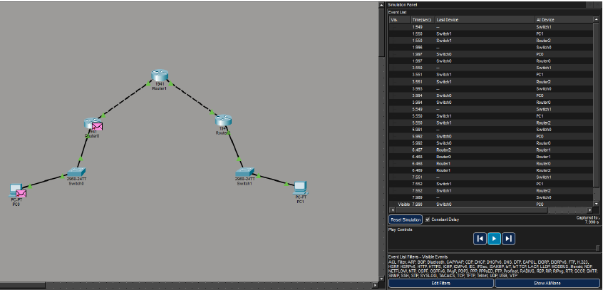

1. Objetivo
Configurar una VPN Site-to-Site con IPSec.
Permitir comunicación segura entre dos redes.
Proteger la información mediante cifrado.
2. Descripción de la Topología
La red está conformada por R1, ISP y R3.
El router ISP simula Internet.
Las redes son 192.168.1.0/24 y 192.168.3.0/24.

3. Habilitación del Módulo de Seguridad
Se activó el paquete securityk9.
Se habilitaron funciones de seguridad.
Se reinició el router.

4. Configuración Básica de Red
Se configuraron interfaces LAN y WAN.
Se asignaron direcciones IP.
Se configuraron rutas.
Se probó conectividad.




5. Configuración de IPSec en R1
Se creó política ISAKMP.
Se configuró clave precompartida.
Se creó transform-set.
Se configuró crypto map.
Se aplicó en interfaz WAN.
Se creó ACL.

6. Configuración de IPSec en R3
Configuración espejo de R1.
Ajuste de direcciones IP.
Verificación de parámetros.
Aplicación en interfaz WAN.
7. Verificación del Túnel VPN
Uso de show crypto isakmp sa.
Uso de show crypto ipsec sa.
Revisión de estado QM_IDLE.
Pruebas con ping.
8. Resultados Obtenidos
Comunicación establecida.
Tráfico cifrado.
Túnel funcional.
Sin pérdida de datos.

9. Conclusiones
Comprensión del VPN Site-to-Site.
Aplicación de IPSec.
Refuerzo en seguridad.
Objetivo cumplido.

10. Recomendaciones
Usar contraseñas seguras.
Implementar certificados.
Respaldar configuraciones.
Documentar cambios.
Hacer pruebas periódicas.